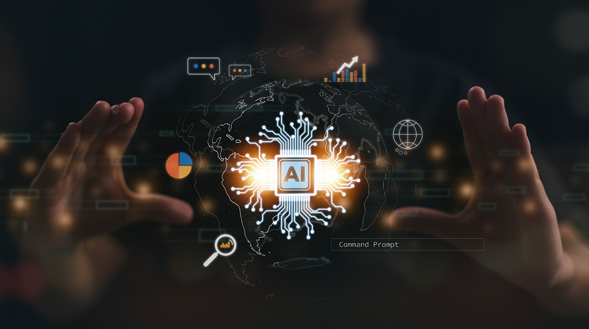
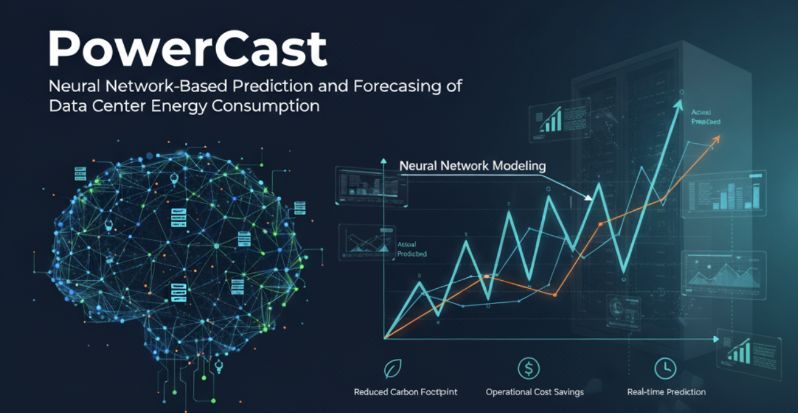
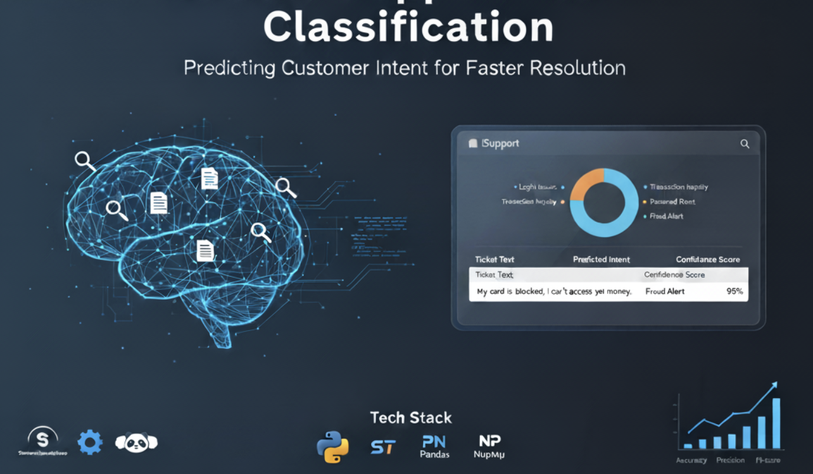
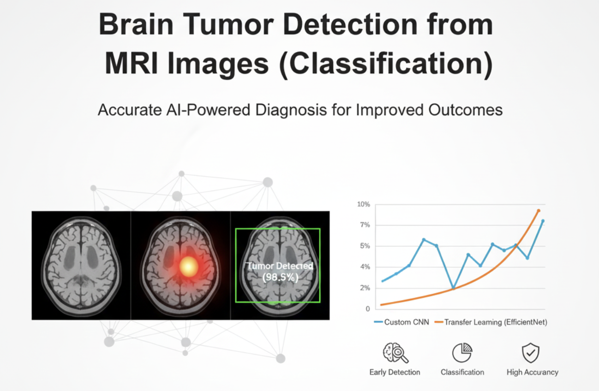
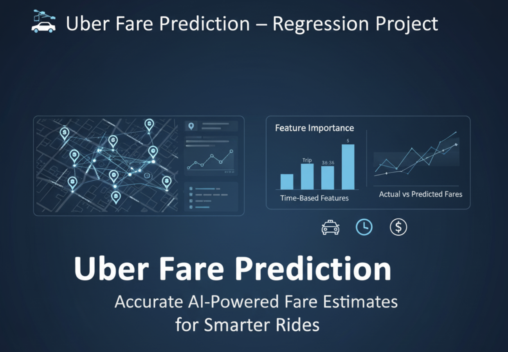
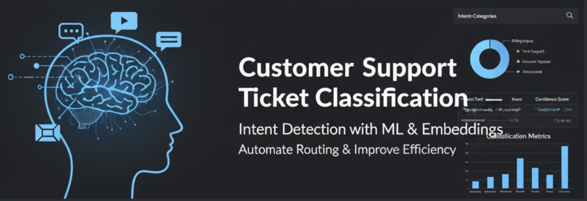
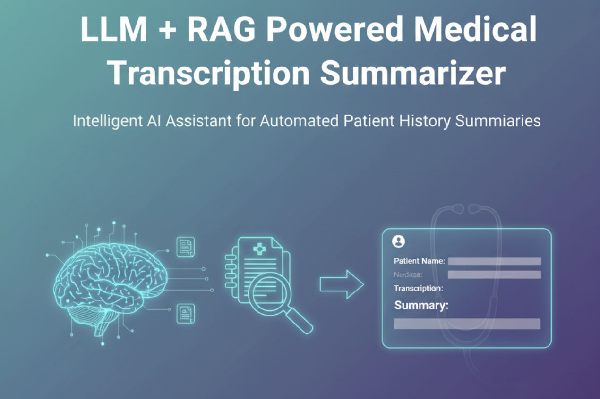
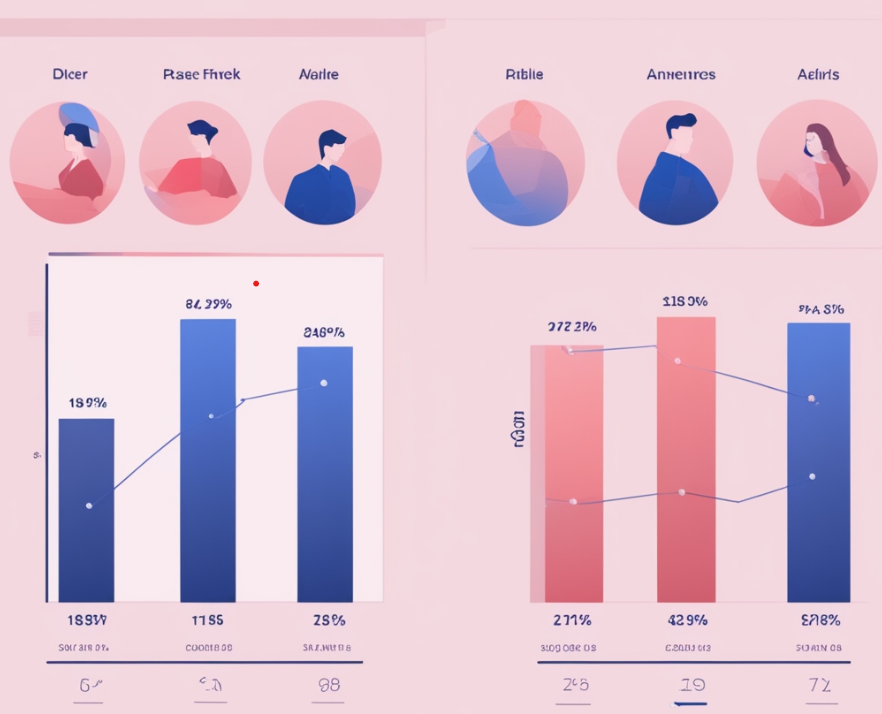

Discover My
Work Experience
0+ Years
AI Engineer, Cummins Inc
New York, USA | (May 2025 – Present)
Developed a GenAI LLM-RAG application for AI-driven CR/IR systems; fine-tuned LLaMA and GPT models with Quantization, LoRA, QLoRA, and hyperparameter tuning in PyTorch and TensorFlow, improving ticket resolution time by 75%.
Built and integrated APIs & Oracle data pipelines to organize, clean, and preprocess structured/unstructured data from SQL, Word, CSV, XML, JSON, PDFs, logs, and production issues, enabling reliable downstream ML workflows.
Implemented end-to-end MLOps pipelines from experimentation to production: model training, validation (k-fold, confusion matrix), evaluation (A/B testing), deployment, real-time monitoring, and continuous improvements.
Led requirement gathering and system design, developed cross-platform full-stack web applications using ReactJS, FastAPI, Oracle SQL, and deployed via AWS, GitHub CI/CD, Docker, and Kubernetes with strong DevOps practices.
Migrated and modernized legacy systems, including an Employee Card Access System with ReactJS & FastAPI, improving reliability and usability across the organization.
Created backend FastAPIs with Pydantic-based validation, JSON-to-SQL parsing, and integrated business/service layers for enterprise-grade scalability.
Optimized complex SQL queries and Oracle stored procedures/functions, improving data handling efficiency and ensuring SLA compliance.
Implemented Single Sign-On (SSO) & JWT-based authentication across frontend/backend, improving security and saving time for 1,500+ employees by eliminating repeated logins.
Designed and automated CI/CD pipelines with AWS, GitHub Actions, Docker, and Kubernetes; deployed applications on secure intranet servers and AWS Lambda.
Graduate Assistant | Machine Learning Engineer, Binghamton University
Binghamton, NY, USA | (August 2024 – May 2025)
Built an AI Patient Simulation Agent by fine-tuning BERT with transfer learning, attention mechanisms, statistical modeling, and hyperparameter tuning using PyTorch, TensorFlow, and Scikit-learn.
Set up ML infrastructure with multimodal LLMs and generative modeling using quantization, mixed precision, and model parallelism for efficient training.
Implemented RAG-based contextual embeddings stored in FAISS VectorDB, improving model accuracy from 82% to 95%.
Transformed LLM text into audio using Python (PyTesseract, pyttsx3), NLP (text clustering, topic modeling), and audio enhancement techniques for realistic voice simulations.
Created a medical API data pipeline with large-scale real-time scraping, preprocessing in AWS SageMaker, and storage in PostgreSQL & MongoDB for structured/unstructured data.
Deployed a Virtual AI Patient using React.js & FastAPI, with simulated voice variations via a text-to-audio alignment algorithm.
Built a diagnostics portal (React.js, FastAPI, SQLAlchemy) with medicine-barcode mapping (OpenCV, python-barcode), optimizing delivery scheduling & inventory tracking by 40%.
Deployed applications with DevOps practices (Docker, Kubernetes, AWS Lambda, CodePipeline/CodeBuild/CodeDeploy), implemented Infrastructure-as-Code, and monitored with AWS CloudWatch.
Machine Learning Engineer, LTIMindtree
Mumbai, India | (June 2021 – July 2023)
Developed ML models with Neural Networks and CNNs (time-series, anomaly detection, OpenCV, image classification) to detect assembly line failures and filter defective items, improving manufacturing quality to 95% and saving $1M/month.
Automated AWS MLOps pipelines with SageMaker and DevOps, reducing production time by 20% and manual workload by 50%.
Fixed a critical security flaw by implementing KMS encryption in JWT authentication, securing IAM credentials, and monitoring CloudWatch metrics, recognized by 20+ clients as a major enhancement.
Built and deployed backend APIs using Python (Django, Postman, S3, EC2, Azure DevOps, CI/CD, GitHub, GitLab) and optimized RDBMS with stored procedures, functions, and triggers in SQL.
Enhanced UI/UX with Django, C#, JavaScript, TypeScript, AngularJS, and SQL, delivering a smoother user experience.
Led deployments and Agile delivery (JIRA, Change Requests, user stories), collaborating with cross-functional teams, resolving issues faster and reducing manual workload by 50%.
VESIT, Software-ML Engineer
Mumbai, India | (January 2020 – April 2021)
Developed a specialized website using Django and SQL Server tailored for visually impaired users in healthcare. The platform enabled users to learn from audio read-back of scanned text, improving accessibility and inclusivity in healthcare learning environments
Deployed a comprehensive text-to-speech system leveraging Pytesseract, pyttsx3 libraries, and advanced techniques such as text clustering, topic modeling, and text-to-audio alignment mapping. Designed a dynamic data upload section and a structured backend engine, achieving a remarkable 92% system accuracy and providing an intuitive user experience
Collaborated with a team of four to develop a cyberbullying detection and dummy account identification system. Utilized Scikit-Learn, Python, NLP, random forest, and decision tree classification models, along with advanced text classification and anomaly detection techniques. This project resulted in a 78% improvement in system performance, enhancing cybersecurity and user safety
Designed and implemented a UI/UX web page system for streamlined incident notifications to an admin page. Leveraged DevOps practices, Object-Oriented Programming principles, and JavaScript for dynamic functionality. Analyzed crucial features and utilized GitHub for distributed deployment, ensuring efficient and direct issue reporting to the administrative panel
Vivekanand Education Society's Institute of Technology (VESIT), Machine Learning Engineer Intern
Mumbai, India | (November 2019 – January 2020)
Developed an "Attendance Monitoring System" in a group of 3 using Django and Machine Learning, for precise and efficient student attendance tracking.
Performed NLP techniques that enhanced the analysis process and deeply analyzed user-generated content from online channels, identifying toxic behaviors and assessing regional cultural influences on technology, education, and advancements.
Implemented a pickle file-based caching algorithm which optimized the system’s speed by 60%, avoiding redundant model training.
Check Out My Recent
Projects
0
+ Completed

AI | Machine Learning | GenAI | LLM | RAG | Projects
August 2024 – Present
A collection of hands-on projects in Machine Learning, AI, and Deep Learning, covering classification, regression, NLP, and Generative AI. The repository includes Python, Scikit-learn, TensorFlow, OpenAI APIs, and more. Projects demonstrate core ML concepts, model building, evaluation, and deployment. Topics span traditional ML, deep learning, LLM fine-tuning, and RAG (Retrieval-Augmented Generation).
Explore Project
PowerCast - (NN) Neural Network-Based Prediction and Forecasting of Data Center Energy Consumption
August 2025 - September 2025
Developed PowerCast, a neural network model to predict data center energy consumption from time-series and workload metrics. Performed preprocessing, feature engineering, and baseline ML benchmarking, then built a tuned deep learning regression model. Achieved superior performance, capturing non-linear energy patterns for cost reduction and sustainability. Tech Stack: Python, TensorFlow/Keras, PyTorch, Scikit-learn, Pandas, NumPy, Matplotlib.
Explore Project
IT Support CR/IR Ticket Priority Classification using LLM + RAG
July 2025 - August 2025
Built a customer intent classification system for IT support tickets using sentence embeddings (all-MiniLM-L6-v2) and ML classifiers including Logistic Regression, Random Forest, SGD, and MLP. Preprocessed text, generated dense embeddings, and applied hyperparameter tuning with GridSearchCV. Evaluated models with accuracy, precision, recall, and F1-score, addressing challenges from label noise and overlapping intents. Tech Stack: Python, Sentence-Transformers, Scikit-learn, Pandas, NumPy, Seaborn.
Explore Project
Brain Tumor Detection from MRI Images (CNN Classification)
June 2025 - July 2025
Built deep learning models for brain tumor detection from MRI scans using custom CNNs and transfer learning with VGG16, ResNet, and EfficientNet. Applied preprocessing, augmentation, normalization, and regularization to improve generalization. Achieved >90% accuracy with EfficientNet, demonstrating robust classification performance for real-world diagnostics. Tech Stack: Python, TensorFlow/Keras, NumPy, Pandas, Scikit-learn, Matplotlib, Seaborn.
Explore Project
Uber Fare Prediction – Regression Research Project
May 2025 - June 2025
Built regression models to predict Uber ride fares using Linear Regression, Ridge, Random Forest, and XGBoost on 200,000+ ride records. Performed feature engineering (trip distance, time-based features), EDA, and hyperparameter tuning with GridSearchCV. Random Forest and XGBoost achieved top performance, highlighting trip distance and time features as key predictors. Tech Stack: Python, Scikit-learn, XGBoost, Pandas, NumPy, Matplotlib, Seaborn.
Explore Project
Customer Support Ticket Classification — Detection with AI/ML + LLM +RAG (Vector Embeddings)
April 2025 - May 2025
Built an AI LLM + RAG system to classify customer support tickets using NLP, sentence embeddings, and ML classifiers. Preprocessed and encoded ticket text and metadata, applied Sentence-BERT embeddings, and trained models including Random Forest and Logistic Regression. Evaluated multi-class performance and suggested future improvements with LLM fine-tuning or contextual classification. Tech Stack: Python, Scikit-learn, Sentence-Transformers, Pandas, NumPy.
Explore Project
Medical Transcription Summarizer using LLM + RAG
March 2025 – April 2025
Built a smart medical transcription summarizer using LLMs and RAG, leveraging sentence-transformer embeddings, FAISS vector storage, and GPT-based summarization to provide concise patient history summaries. Developed a robust ML pipeline and explored enhancements like fine-tuning domain-specific LLMs and real-time hospital assistant integration. Tech Stack: Python, HuggingFace/OpenAI Transformers, FAISS, sentence-transformers, Pandas, Matplotlib, Seaborn.
Explore Project
OK CUPID PROFILES ANALYSIS
January 2024 – May 2024
Analyzed OkCupid user profiles to identify patterns in matching preferences and profile popularity. Collaborated with a team to examine attributes such as age, height, and body type, while exploring factors like income and lifestyle choices affecting profile popularity. My contributions provided valuable insights into user behavior, enhancing the understanding of online dating dynamics and improved matchmaking strategies.
Explore Project
Analysis of Cultural Impact on Tech Discussions: Reddit vs YouTube
August 2023 – December 2023
Developed an automated system for collecting and analyzing Reddit and YouTube data using Python, PostgreSQL, and machine learning models. Utilized NLP techniques for sentiment analysis and trend predictions, while also identifying toxic behaviors and assessing cultural influences. Automated data processing and visualized insights with Flask, Django, and Power BI, by data-informed decision-making
Explore ProjectCyber Bullying and Fake Account Detection in Social Media
July 2020 – April 2021
Developed a Python-Django-based website utilizing advanced logic and NLP to detect cyberbullying and fake social media accounts. Used Python, SQL Server, and Matplotlib for data processing, while implementing a Random Forest model to analyze account authenticity. The solution improved online security, streamlined reporting, and enhanced user experience by identifying and addressing suspicious activities effectively.
Explore ProjectFace Recognition based Attendance Management System
July 2019 – April 2020
Designed a face recognition-based attendance management system using Python-Django and Machine Learning. Integrated advanced image and face recognition algorithms with an unique approach for accurate tracking, even with partial face visibility, using Python, SQL, Pickle, Pandas, and Matplotlib. Optimized system performance by 60% with a caching algorithm to avoid redundant model training.
Explore ProjectAudiobook System
January 2020 – April 2020
Created a Python-Django web application to assist visually impaired users by converting scanned text into speech using libraries like pyttsx3 and Pytesseract. Utilized Django and SQL Server to build and optimize the app for efficient PDF and text-to-speech conversion. Collaborated on planning, design, and troubleshooting with the team, ensuring seamless user experience and functionality.
Explore ProjectExplore More Porjects here View All Projects Project
Look Through My Research
Research
Papers Published
2
Certifications
5+
Awards
2
Papers Published
Joseph, Richard and Samtani, Jayesh and Sidhwa, Sagar and Tiwari, Somesh and Wadhwani, Riya, “Cyber bullying and Fake Account Detection in Social Media”, Jun’21, Proceedings of the 4th International Conference on Advances in Science & Technology (ICAST2021)
ELSEVIERDoultani, Mannat, Yogesh Tekwani, Somesh Tiwari, and Sagar Sidhwa, "Attendance Recognition System using Face Appearance", Vol 12 No SUP 1 (2020): Jun’20, SAMRIDDHI: A Journal of Physical Sciences, Engineering and Technology
SAMRIDDHICertifications
| ● Amazon Web Services (AWS) Certified Machine Learning Engineer - Associate |
| ● Probability for Data Science |
| ● Completed the "Machine Learning using Python in Data Science" and "Android Developer Course" from Udemy. |
| ● Completed multiple Oracle courses and certificates on Artificial Intelligence with Machine Learning, Database Design and Programming with SQL, Java Programming Cumulative Final Exam. |
Awards
| ● Recognized with the prestigious "GoMX Annual Hall of Fame Awards 2022", achieving the title of "Business Unit of the Year" commended for exemplary dedication, ownership, and trust demonstrated in contributions to the MFGOG project and team. |
| ● Achieved top position at the inter-department district level round of Avishkar-2019-20, an inter-university research project competition. |
Feel Free to drop a Message :)
Thank you for taking the time to learn about me. I'm actively looking for new opportunities and collaborations. Feel free to reach out if you're interested in connecting or discussing potential projects!